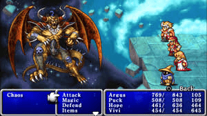

Saving the world isn’t easy, and the Warriors of Light in the original Final Fantasy don’t have it any easier than those in subsequent titles. FF1 introduces many boss battle elements that are repeated throughout the series, too - and some of its enemies are still re-appearing in the game’s many sequels to this day.
Boss Details & Strategies
Garland
Garland has kidnapped the Princess and is your primary target from the very start of FF1. Approach him after leveling up once or twice and you should already have everything you need. Garland has relatively low stats, so you should be able to blast him down with physical attacks and basic Black Magic such as Fire or Thunder.
- Recommended Level: 2-3
- Weakness: Fire
- NES Stats: HP 106 / ATK 15-30 / DEF 10 / MDEF 64 / EXP 130 / GIL 250
- Pixel Remaster Stats: HP 212 / ATK 15 / DEF 8 / MDEF 64 / EXP 130 / Gil 250
Bikke's Pirates
Once you reach the town of Pravoka, you’ll meet the pirate Bikke. You need his ship. He doesn’t want to give it. His goons attack. There’s nine of them - but really, this isn’t much of a boss battle - these are just normal enemies, really - but a lot of them. Any one of your characters, even the mages, should be able to off them in a single hit. If you beat Garland, you can beat these guys.
- Recommended Level: 3
- Weakness: Sleep
- HP: 6 / ATK 8 / DEF 0 / MDEF 15 / EXP 40 / GIL 40
Piscodemon / Wizards
Like the Pirates, this one barely counts as a boss battle, but we’ll list it anyway as it’s a non-random encounter you’ll find on B3F of the Marsh Cave dungeon. Despite their NES name of ‘Wizard’, they actually only use melee attacks. They’re resistant to magic, too. Simply focus on the demons one at a time. It shouldn’t be too difficult an encounter.
- Recommended Level: 10
- Weakness: Lightning
- HP: 84 / ATK 30 / DEF 16 / MDEF 98 / EXP 276 / GIL 300
Astos, the King of Dark Elves
Poor old King Astos has taken something of a rough turn by the time you return to him from retrieving the Crown and beating up the Wizards. We recommend saving your game after getting the Crown but before fighting him - but he isn’t too tough.
He always casts RUB on one of your allies as his first action. This is a single-target instant KO spell. It has a low chance of hitting, but this is why it’s a good reason to save, in case it completely screws you over.
Astos likes to spell-sling in general with things like Fira, Thundara, Haste, Slow, and even Sleep. Whenever Astos casts Slow, you should consider countering it by casting Haste on the slowed character in return. In fact, try to keep those characters in the fast Haste status - this is a fight you ideally want to avoid dragging out, so hit him hard, hit him fast, and then get out of there.
- Recommended Level: 10
- Weakness: Bind
- NES Stats: HP 168 / ATK 26-52 / DEF 40 / MDEF 170 / EXP 2250 / GIL 2000
- Pixel Remaster Stats: HP 420 / ATK 30 / DEF 18 / MDEF 170 / EXP 2250 / GIL 2000
Vampire
These Vampires are hardly Castlevania level - they’re found in the Terra Cave, and you’ll need to beat it to get the Star Ruby. The thing is, the dungeon around him is harder than the boss itself - you’ll just want to reach there with health and spell charges intact.
His most annoying move is Dazzle, a 100% hit spell that inflicts Paralysis on a single ally. Still, that’s not so bad - especially when he’s weak to Fire from Black Mages and the Undead-damaging Dia / Harm spell from White Mages. Mix those with Melee attacks to see him go down hard.
- Recommended Level: 12
- Weakness: Fire, Dia
- Resists: Confusion, Death, Blizzard, Quake, Paralysis
- NES Stats: HP 156 / ATK 76-152 / DEF 24 / MDEF 75 / EXP 1200 / GIL 1200
- Pixel Remaster Stats: HP 280 / ATK 76 / DEF 26 / MDEF 75 / EXP 2000 / GIL 2000
Lich, the Earth Fiend
Lich is found in B5F of the Terra Cave - and he’s the first of the four fiends you’ll be taking on. This is arguably the first truly big, challenging boss of FF1.
Lich loves magic way too much, including the ridiculously powerful Flare / Nuke fire-element spell. If you can’t kill him fast, you might want to consider casting NulBlaze / AFIR, the Level 3 fire-resisting White Mage spell, to protect yourself. However, you’ll only need to do this if you’re taking your time - if you’re quick by using Haste/Fast on your big-hitters, you can handily kill Lich before it starts breaking out the big spells you’d want to resist.
- Recommended Level: 16
- Weakness: Fire, Dia
- Resists: Confusion, Death, Blizzard, Paralysis
- HP: 400 / ATK 40 / DEF 40 / MDEF 120 / EXP 2200 / GIL 3000
Red Dragon
The Red Dragon can be found lurking in Mount Gulg, standing between you and a chest with the Flame Mail armor - which will be useful for the next boss. This is a challenging fight, but there’s honestly not much to it - it’s weak to Blizzard, but other than that it’s a simple war of attrition.
- Recommended Level: 20
- Weakness: Blizzard
- Resists: Fire
- HP: 248 / ATK 75 / DEF 30 / MDEF 200 / EXP 2904 / GIL 4000
Marilith, aka Kary - the Fire Fiend
If you’re wondering where that second alias comes from, it’s the original NES release - Kary was presumably a mistranslation intended to be Kali, which makes a lot more sense for this snake-woman, the second of the four fiends.
Despite being built around Fire, Marilith is not weak to ice attacks - so don’t bother. In fact, all she’s weak to is a bit of Paralysis, if you have anything to hand that can inflict that status effect.
- Recommended Level: 20
- Weakness: Paralysis
- Resists: Bolt, Fire, Blizzard
- HP: 600 / ATK 40-80 / DEF 50 / MDEF 183 / EXP 2475 / GIL 3000
Evil Eye
Known in the NES version simply as Eye, this inhabitant of the Ice Cave is yet another FF1 boss battle that feels like a bit of a race against time, as this boss cues up a bunch of instant-death attacks… so it’s kill fast, or be killed.
- Recommended Level: 21
- Weakness: n/a
- Resists: Quake
- HP: 162 / ATK 30-60 / DEF 30 / MDEF 92 / EXP 3225 / GIL 3225
Dragon Zombie
Say hello to the Zombie Dragon, found at the end of the Citadel of Trials. Consider it a brother of the Red Dragon from earlier - it’s actually quite similar. As it’s undead, you can burn it with Fire spells or make its life a misery with Dia/Harm White Magic attacks.
Beating this boss is ultimately not crucial to progression, but it is necessary to get the key item you need to get Bahamut to unlock the class upgrades and job promotions for your characters - so you should do it as soon as you have the airship and reach this area.
- Recommended Level: 23
- Weakness: Fire, Dia/Harm
- Resists: Confusion, Death, Blizzard, Quake, Paralysis
- HP: 268 / ATK 56 / DEF 30 / MDEF 135 / EXP 2331 / GIL 999
Kraken, the Water Fiend
The third of the four fiends of the elements, Kraken is the water beast and naturally has a whole lot of tentacles. For our money, he’s the most difficult of the four fiends despite coming third in the progression.
You’ll want to make sure your physical damage dealers such as Knights, Ninjas, and Masters (you should have the class upgrades by now) are primed to deal maximum damage by casting Haste/Fast on them.
Your designated healer or item user should be ready to cure at the drop of a hat, as Kraken hits very hard. Kraken will also use an attack that’ll inflict Darkness that you should try to remove if you can. NulShock is also very useful for dulling the pain of its Lightning attacks. Despite using Lightning element attacks itself, Kraken is weak to that element, alongside Blizzard.
- Recommended Level: 25
- Weakness: Bolt, Blizzard
- Resists: Fire, Quake
- HP: 800 / ATK 50-100 / DEF 60 / MDEF 160 / EXP 4245 / GIL 5000
Blue Dragon
As well as being the name of another great RPG from Final Fantasy creator Hironobu Sakaguchi, Blue Dragon is a minor boss in FF1 found in 3F of the Tower of Mirage. Like the previous dragons, it’s not crushingly challenging, but is a big enough fight to list here.
The Blue Dragon will resist Lightning Spells. In fact, if possible, we recommend that you focus down on this enemy with your physical attackers. However, it is weak to Fire - so a well-placed high-level fire spell could end the fight prematurely, if you’re willing to spend a spell cast on it.
- Recommended Level: 25
- Weakness: Fire
- Resists: Bolt
- HP: 454 / ATK 92-184 / DEF 20 / MDEF 200
Warmech
Omega, Ultima Weapon… these super bosses are in many ways directly descended from Warmech, who happens to be the second most powerful enemy in FF1, just behind the final boss.
Warmech is no joke. The first point of order to worry about is Flare/Nuke, an utterly brutal attack. We’ve encountered it before, but it’s worse here. NulBlaze/AFIR can be helpful, but will only go so far. Instead, as is often the case with FF1’s bosses, you should focus on making your characters faster with Haste/Fast, starting with your physical damage-dealers such as Knights, Ninjas, and Masters.
Back that up with a mix of NulBlaze, and sending back Flare spells of your own in return. This is one spell where the Invis spell can be really useful if you have a White Mage or Red Wizard - the increased evasion can help avert disaster. Speed comes first in this battle, followed by defense, and then finally attack. When the time comes to attack, get everybody involved - even White Wizards, if they have Holy/Fade.
- Recommended Level: 30
- Weakness: n/a
- Resists: Bolt, Confusion, Death, Fire, Blizzard, Quake, Paralysis
- HP: 2000 / ATK 128-156 / DEF 80 / MDEF 200 / EXP 32000 / GIL 32000
Tiamat, the Wind Fiend
You can tell that we’re close to the finish line as it’s time to face the fourth and final FF1 fiend of the elements. As mentioned, despite being last, we actually Tiamat isn’t quite as hard as Kraken was - but it can still be a challenging fight.
Tiamat comes packing multiple special attacks like Thunder, Poison, and Blizzard. Once again, this is a late-game fight where you can use Invis to evade heavy damage attacks - but really, all you need to do is follow that age-old template - use Haste/Fast, and then hit them hard. Flare/Nuke and Holy/Fade are incredible here.
Finally… somehow, and this is crazy to us, but Tiamat is actually weak to Break and Pane/Poison/Scourge - both attacks that can potentially instantly kill. There’s an element of chance here… but they can work. Otherwise, just haste and spam, baby.
- Recommended Level: 34
- Weakness: Break
- Resists: Bolt, Fire, Ice, Quake
- HP: 1000 / ATK 49-98 / DEF 80 / MDEF 200 / EXP 5496 / GIL 6000
Fiends Return: Lich 2, Marilith 2, Kraken 2, Tiamat 2
It’s one of the oldest tricks in the video game design book: bring back a bunch of bosses at the end of the game for a challenging and game-lengthening boss rush. The first Final Fantasy isn’t above such a thing - and so in the Temple of Chaos you’ll face off against all four of the Fiends for a second time.
The good news is that while they’ve been slightly upgraded this time out, they all feature the same elemental weaknesses and battle strategies as before - they just have more HP.
- Lich 2: Flare/Nuke and Dia/Harm are key. Watch out for Lich's own Flare.
- Marilith 2: NulBlaze/AFIR is your friend against this fire-lover.
- Kraken 2: Lightning Attacks are your best friend, be wary of Darkness status.
- Tiamat 2: Focus on physical attacks and haste to save your spell casts for Chaos.
Chaos

Well, you’ve made it. You’re here to kill Chaos, the last boss of Final Fantasy. Here’s the bad news: Chaos has access to just about every powerful spell in the game, and his castings are entirely random. Like some other similar fights, we might want to go defense first.
Your best defensive options are the Invis spells to raise evasion, and NullAll/Wall, which significantly lowers all incoming spell damage.
One major problem with Chaos is that he can cast the top-level Cure spell, which restores all HP - but he can only do it every so often. As such, a viable strategy is to turtle until he uses it, then unleash hell to kill him before he can cast it again.
As always, the Haste/Fast spell is key here for making the most of that window to kill Chaos - just prioritize putting it on your highest-damage characters, specifically your Knight or Master.
- Recommended Level: 35+
- Weakness: n/a
- Resists: Dia/Harm
- HP: 2000 / ATK 100 - 200 / DEF 100 / MDEF 200